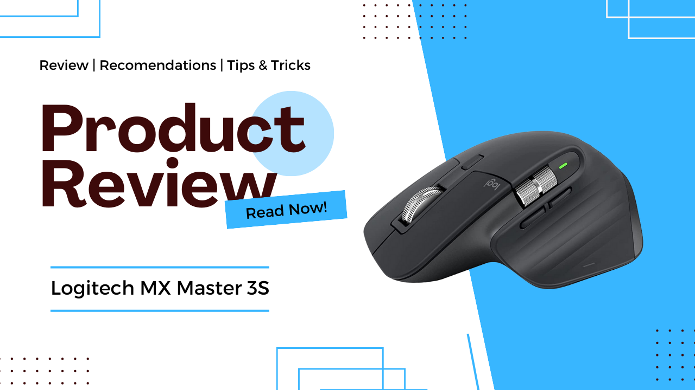
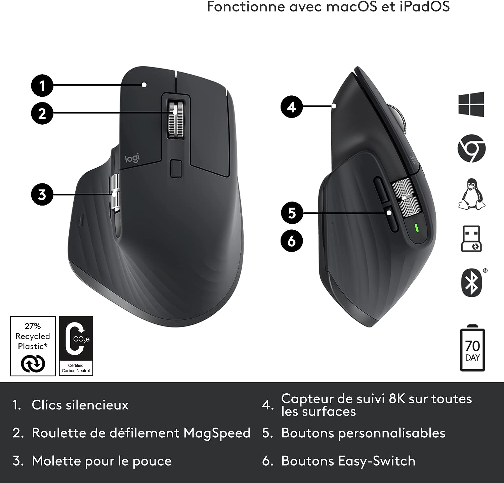

La souris des devs
Publié le 08/04/24
Introduction
Avec sa conception ergonomique, sa connectivité polyvalente et ses fonctionnalités personnalisables, la Logitech MX Master 3 promet une expérience utilisateur exceptionnelle, idéale pour les longues sessions de codage.
Conception et Ergonomie
La MX Master 3S arbore un design élégant et ergonomique qui s'adapte confortablement à la paume de la main, réduisant ainsi la fatigue pendant de longues sessions de travail. Les matériaux de qualité et la finition soignée renforcent sa durabilité et son attrait esthétique. De plus, les boutons programmables et la molette de défilement ultra-rapide offrent un accès rapide aux commandes fréquemment utilisées, améliorant ainsi l'efficacité et la productivité.
Performance et Fonctionnalités
Avec un capteur laser de haute précision, la MX Master 3S garantit un suivi précis sur une variété de surfaces, ce qui en fait un choix idéal pour les professionnels créatifs et les utilisateurs exigeants. La connectivité polyvalente, y compris Bluetooth et le récepteur USB Unifying, offre une flexibilité maximale pour une utilisation avec plusieurs appareils. De plus, les fonctionnalités avancées telles que la molette de défilement électromagnétique MagSpeed et la possibilité de personnaliser les boutons via le logiciel Logitech Options permettent une expérience utilisateur hautement personnalisée.
Autonomie et Charge
Avec une batterie rechargeable longue durée, la MX Master 3S offre jusqu'à 70 jours d'autonomie avec une seule charge, ce qui est impressionnant pour une souris de ce calibre. De plus, la fonction de charge rapide vous permet de recharger rapidement la souris pendant quelques minutes pour plusieurs heures d'utilisation, éliminant ainsi les temps d'arrêt inutiles.
Conclusion
En résumé, le Logitech MX Master 3S est une très bonne souris qui allie design élégant, confort ergonomique, performances de pointe et fonctionnalités avancées. Que vous soyez un professionnel créatif, un utilisateur exigeant ou simplement à la recherche d'une souris haut de gamme pour améliorer votre expérience informatique, la MX Master 3S ne manquera pas de vous impressionner par sa polyvalence et sa fiabilité.
Retrouve la MX Master 3S sur Amazon